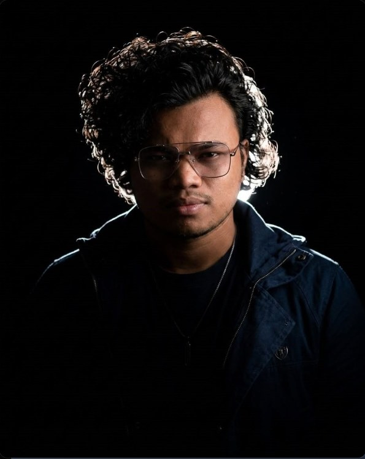

ASHOK
RANJIT.
Selected films.
A glimpse into moving-image storytelling. These videos are linked from Ashok's existing portfolio; project titles and specific production roles will be added after review.
“To elevate every frame and bring stories to life with a truly cinematic style.”
Photography.
Faces, moments, textures and visual experiments. A selection of portraits, weddings, cultural moments and wildlife from Ashok’s supplied photography collection.
* Optimized copies of Ashok’s supplied photographs. All photographs remain subject to final client approval.

About Ashok.
I'm Ashok Ranjit, a filmmaker and video editor passionate about creating cinematic content. I work with the details that shape how a story feels — from camera composition and color grading to sound design and pacing.
Whether it's a short film, a commercial or a music video, my goal is to bring the narrative to life with a distinctive visual language.
Preview bio adapted from the provided About Me screenshot. Final biography and professional credits will be confirmed with Ashok.
Get in touch ↗The creative journey.
Music and dance are part of Ashok's artistic expression. Selected songs offer another perspective on the storyteller behind the lens.
Have a story
worth telling?
Let's turn an idea into something unforgettable. Reach Ashok through his public creative profiles.